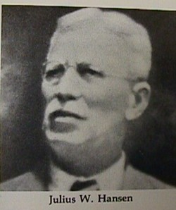

Hansen Corporation was founded in 1907 by Julius Hansen. Julius based the company in Princeton Indiana.
Julius was a German immigrant who started as a watchmaker and jeweler by trade.
Julius created, at the request of a high school principal, the first bell-ringing system.
It didn't take long for Julius to expand the company and become a market leader in small motor manufacturing.
The motor products varied from DC brush motors, clock movements, hysteresis permanent magnet synchronous motors, and stepper motors.
Hansen Corporation remained independent from 1907 to 1977.
On March 18, 1925 the historic Tri-state Tornado hit the company as the tornado's final destination in Princeton Indiana, completely destroying the company's production.
The tornado hit when the company was experiencing record high orders for the new Hansen Self-Winding Clock. This did not stop Julius Hansen as he and his son, William Lester,
worked on rebuilding the company which allowed the company to continue production and grow within the precision motor industry.
In 1939, there was a fire that completely destroyed the facility. This led to another complete rebuild for the company.
Hansen Corporation continued to grow and eventually expanded into synchronous motors, DC motors, clock movements, and custom motion products.
During the 1950s Hansen Corporation was later acquired by another company. P.R. Mallory & Co. Inc. This company was a major American electronic manufacturer which was based in Indianapolis, Indiana.
This company was known for creating the battery brand Duracell. The reason for the purchase was to include Hansen Corporation into their internal timing and appliance motor division.
In 1977 the ownership changed to Minebea, a Japanese manufacturer. Minebea continued to help grow Hansen Corporation for roughly 37 years before changing ownership again.
In 2014 Hansen Corporation was acquired by ElectroCraft, which has continued to support the company's innovation and growth.
ElectroCraft is an American fractional-horsepower motor and motion control company. ElectroCraft purchased Hansen Corporation at 100% of capital stock, meaning they have full ownership over Hansen Corporation.